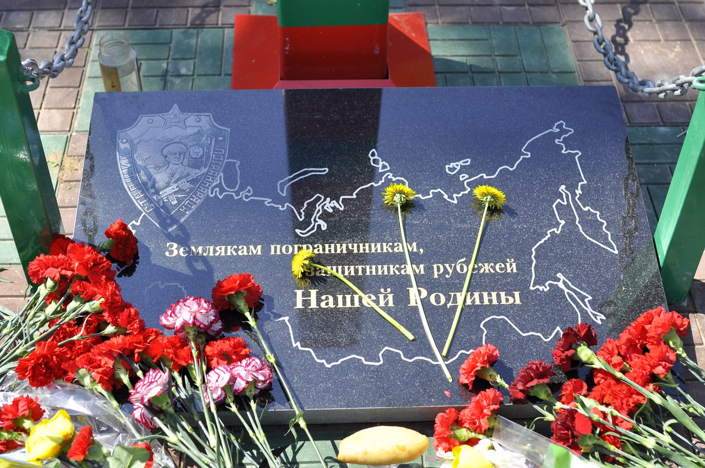

Среди жителей гор.Рыбинска и Рыбинского района Ярославской области, огромное количество Пограничников запаса, которые исполняли свой интернациональный долг "За речкой" в Афганистане, являются участниками Боевых действий на Таджикско - Афганской Границы, Северного Кавказа, есть среди них те, кто помнит события на острове Доманский в марте 1969, в ходе международного конфликта СССР и КНР. Все мы служили в разных Красно-Знаменных Пограничных Округах, в разных отрядах, на разных заставах. Но только Нам известно, на что способен Пограничник, даже если один он в поле воин, Мы знаем цену пограничной солдатской дружбы
